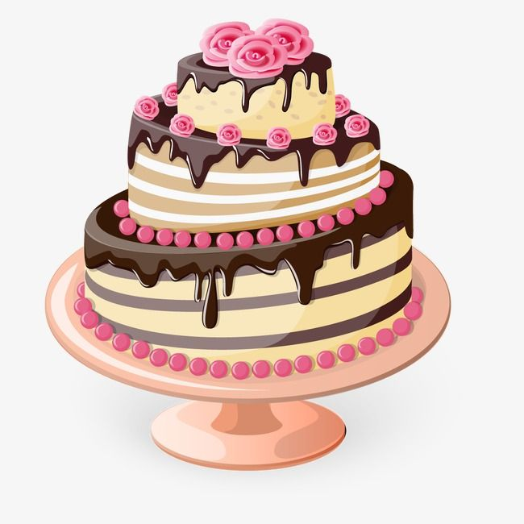

Cake

Chocolate Rose Cake
Today we will make the world famous chocolate rose cake. Some say that it's inedible
because we use real roses. I say those people are probably right... But here we are
making it anyway. You're the one that has to eat it after all. Not me.
Ingredients:
- 500g Chocolate
- 200g Pink Roses
- 3 Tbpn Vanilla Extract
- 2 cups Flour
- The Soul of a Ranga
- 1 Tspn Olive Oil
Steps:
- Get all the ingredients ready
- Put the ingredients in a bowl
- Mix them
- Hit it with a hammer, repeatedly
- Draw a pentagram on the counter
- Summon the demonic spirit of Paimon
- Direct Paimon to put cake mix in the oven
- Wait aproximately 60 minutes
- Retrieve finished cake from oven
- Garnish with raw roses
- Enjoy cake, however probably do something about the demonic
presence you have invited into your home